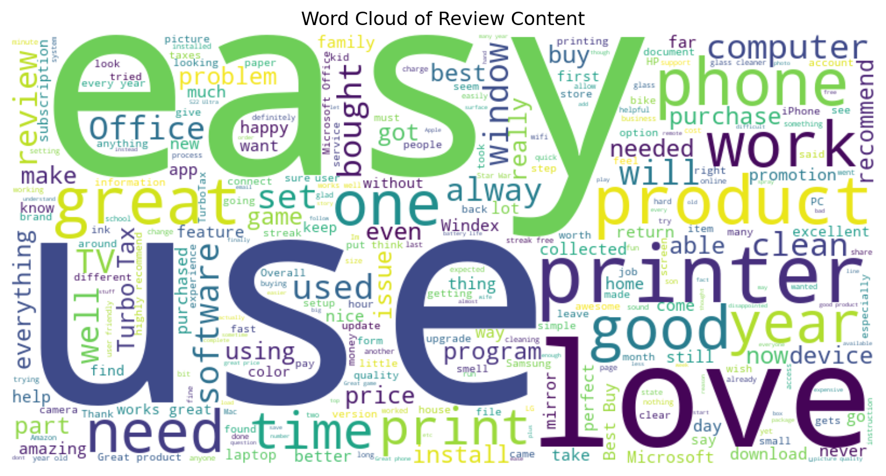
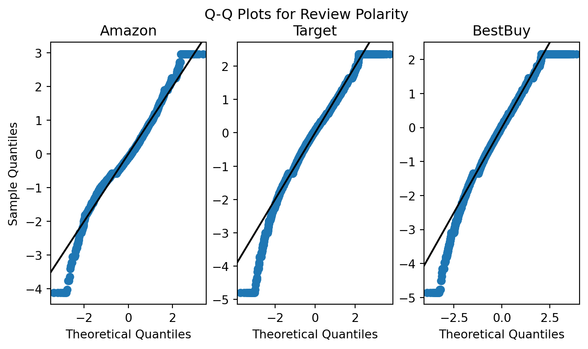
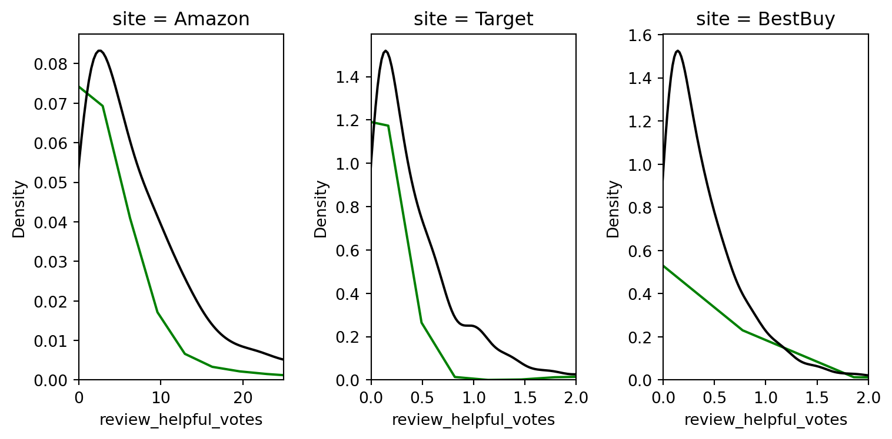
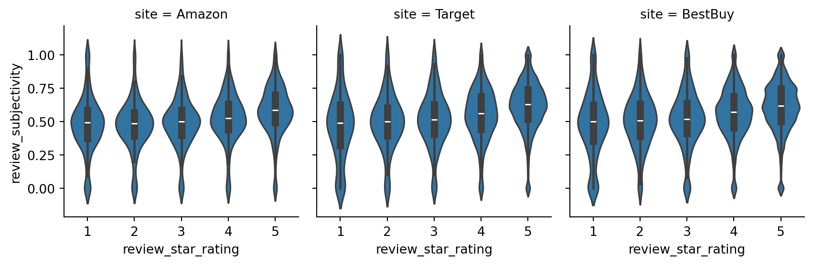

| Variable | Data Type |
|---|---|
| Product Title | string |
| Product Category* | string |
| Product Details/Specs | string |
| Product Cost | float |
2 Data Collection and Exploration
2.1 Data Collection Overview
The original efforts by Guha Majumder, Dutta Gupta, and Paul (2022) selected three products, all listed on Amazon for sale. In our efforts, we leveraged python Selenium, urllib, and Beautiful Soup to scrape data from 20 different products across multiple websites (Amazon, BestBuy, and Target). Where possible, we sought to collect the exact same 20 products from each site and customer feedback associated with each.
As part of collection, to the greatest extent we were able, we cleaned information during the scraping process. Doing this enabled us to have minimal cleaning efforts after collection. Post collection, remaining items such as handling and removing special characters, unicode characters, addressing customer reviews written in foreign languages, and addressing misspellings remained necessary.
In terms of simplicity for scraping our data, we manually identified a list of products from each of the aforementioned sites. Our team divided responsibilities to produce scraping code customized for each of the three websites.
2.2 Data Collection Details
In collecting our data, in order to adhere to the model implemented by Guha Majumder, Dutta Gupta, and Paul (2022), we required the following data points:
For the product category variable - we may add our own manual categorization. Guha Majumder, Dutta Gupta, and Paul (2022) manually set the value for this variable. Part of the intent of our research is to seek out means and methods to replace this variable with a continuous scale (ranging from 0 for a “search” good, to a 1 for an “experience” good).
As an initial proxy for this variable and to operationalize it, we leverage a measure of subjectivity for the product - namely how subjective (e.g. how many adverb, adjective, and other word modifiers) are present within the details and specifications of a product. A product that more aligns to a “search” product, we hypothesize, will have fewer modifying words and be oriented toward the facts of the object.
For example, a desk has specific dimensions for length, width, and height, an associated weight, and material from which the desk is made, and possibly some warranty information - all of which are likely to be contained within the product description and specifications. We would characterize such a good as a “search” good (or a 0 on our scale). Leveraging existing language processing tools should allow us to calculate a value for subjectivity in the product’s description and specifications.
Initially, we’ll explore product subjectivity in the combination of the specification and the description, though it may be necessary to explore product subjectivity solely within one of these fields or the other to pursue our modeling.
| Variable | Data Type |
|---|---|
| Verified Purchase | boolean |
| Star Rating | float |
| Review Content | string |
| Useful Votes | integer |
In Table 2.1, we outline the specific datapoints we sought out for reviews across each website. Guha Majumder, Dutta Gupta, and Paul (2022) leveraged star rating, review content (specifically the review length), and the number of votes for the review being useful as key measures in their research. To further their work, we plan on exploring the impacts of verified product purchasers and the impact of verification on how useful a review may be to potential customers.
| Variable | Data Type |
|---|---|
| Product Subjectivity | float |
| Review Length (Words) | integer |
| Review Subjectivity | float |
| Review Polarity | float |
Post collection, we added the calculations listed in Table 2.2 to our review data and product data (less reputation score). Each of these calculations will allow us to better understand our underlying data and explore possibilities of where and how each may fit into models for review usefulness.
We have also established a master listing of all products for which we collected data and have associated arbitrary identifiers with the products. In instances where we’ve successfully pulled data for identical products from multiple websites, it can allow us to explore the impact on product and review metrics and investigate the listing site as a treatment variable.
For instance - exploring the impact of review subjectivity, polarity, length, and usefulness, based upon which site the product was listed.
2.3 Data Collection Procedures
We wrote code to allow us to gather information from each website. The general process for each e-commerce platform is similar. To alleviate any unnecessary burden for any of these websites, we manually identified URLs to the specific products we sought out to gather, and wrote our code to iterate through those URLs and pull the necessary data and features we sought. This manual identification also allowed us to ensure, in most cases, that we were getting the exact same product during data capture. This hybrid approach enabled higher certainty in getting the same product while also accelerating collection, structuring, and cleaning of product review information.
Gathering from Amazon (All Products)
- Product & Review data was scraped from Amazon’s website using Python and Selenium. A Selenium WebDriver was utilized to automate web browser interactions. After navigating to product categories like electronics, home appliances, furniture, books, and grocery, Selenium’s functions were employed to locate review elements. These elements were then parsed and collected, storing the data in a structured format i.e. a CSV file. Pagination handling was implemented to scrape reviews from multiple pages.
Gathering from BestBuy (Electronic Products, Furniture Item(s)? - no grocery or clothing)
- Just like Target and Amazon, even BestBuy has dynamic content on its web page. We employed Python with Selenium to automate the exploration of product pages, unveiling hidden content, and harvesting essential data. Employing Selenium’s functionalities, we initiated the traversal process, enabling the program to automatically expand pertinent sections to uncover additional information. By targeting elements such as product details and reviews, we orchestrated the seamless extraction of critical fields from each product’s page. This automated approach allowed us to efficiently parse through an extensive array of reviews, ensuring a comprehensive analysis of user feedback for the products under scrutiny. We systematically stored the extracted data in our records tables for further analysis and reference.
Gathering from Target (All products)
- Target has dynamic content on their webpages. We used Python Selenium to navigate to product pages and automate the selection of items needed to expand sections to reveal additional data. We also automated the process of expanding out all reviews so as to iterate through and parse the content of every review for each product in question.
2.4 Data Exploration
After collection and cleaning, we plan to explore our data via visualization, seeking to answer key research questions.
Is the price of a product higher, given it’s offered on Amazon, BestBuy, or Target?
Is a product’s star rating affected by which e-commerce platform is selling it?
Is there a substantial difference in number of product reviews on one e-commerce platform vs. another?
Is one e-commerce platform more likely to have input and feedback on reviews (i.e. higher proportion of “this review is helpful” votes to total number of reviews)?
What is the difference in the level of detail provided in product descriptions (e.g. for the same product) across each e-commerce platform?
Do certain product categories perform better on specific platforms?
Are users more likely to leave reviews on one platform over another?
Do customers show different purchasing behaviors based on promotional strategies employed by platforms?
Structuring our data properly during the collection process will enable us to explore and answer these questions.
2.5 Data Exploration and Visualization
For our data exploration, we plan to examine solely the reviews for which we have data from all of our websites. Due to the nature of the vendors, not all offer the same products online. We’ve included some unique products from each site (and may even gather more), but will exclude them from initial analysis.
The common items between all 3 websites include the following:
| product_title |
|---|
| Samsung Galaxy S22 Ultra 5G Unlocked (128GB) Smartphone - Burgundy |
| HP DeskJet 2755e Wireless All-In-One Color Printer, Scanner, Copier with Instant Ink and HP+ (26K67) |
| JBL Charge 5 Portable Bluetooth Waterproof Speaker - Target Certified Refurbished |
| TurboTax 2023 Deluxe Federal and State Tax Software |
| Hamilton Beach 4 slice Toaster 24782 |
| LG 65" Class 4K UHD 2160p Smart OLED TV - OLED65C3 |
| GE JES1460DSBB 1.4 Cu. Ft. Black Counter Top Microwave |
| Doritos Nacho Cheese Flavored Tortilla Chips - 14.5oz |
| Crest Cavity & Tartar Protection Toothpaste, Baking Soda & Peroxide - 5.7oz/3pk |
| OXO POP 3pc Plastic Food Storage Container Set Clear |
| Hogwarts Legacy - Xbox Series X |
| Star Wars Jedi: Survivor - PlayStation 5 |
The reason for only examining common products is to check for comparability and similarity of the products associated variables (e.g. product subjectivity, review subjectivity, review polarity, star rating, and so forth) between the websites. If they are similar or comparable, it may mean that we could use single models to make predictions on the usefulness of customer feedback. If they are substantially dissimilar, it may mean that modifiers are needed based upon the e-commerce platform in which the product is listed.
We’ll start by looking at distributions of some of these key variables, and check some of the common trends between them, potentially moving on to hypothesis testing of these variables to check for statistically significant differences.
2.5.1 Univariate Plots and Distributions
First, we want to examine the review content across all websites in a single, simple visual - a Wordcloud. Seeing common words and phrases can prime us for what we might expect to see in more detailed statistical plots.

Examining the Wordcloud, some larger words stick out (“easy”, “good”, “love”, “need” and “great”). There don’t seem to be very many negative singular words here as it pertains to these reviews. This may suggest that the content of reviews, generally, gravitates toward positivity in reviews. We will proceed to examine this with appropriate statistical plots.
Examining the histogram plots for star-rating by website, we can see that, generally, reviews tend to provide more positive than negative feedback for the selected products, supporting what we see coming out of Figure 2.1
Across all three websites, there appears to be consistency with adherence to, and issues with, the normal distribution for subjectivity. These charts suggest sufficient normal distribution of review subjectivity (degree of inclusion of word modifiers such as adverbs and adjectives).
Therre seems to be slight skewness in the tails of these Q-Q distributions. Filtering off some of the outliers may grant us reasonable relevance and assurance to perform hypothesis testing and evaluation of these variables across sites (e.g. ANOVA, F-Testing, etc).
We’ll try plotting the same Q-Q plot with outliers removed. To remove outliers, initially, we leveraged the inter-quartile range of each variable and excluded any records for which the variable was more than \(1.5\cdot \text{IQR}\) away from the 1st and 3rd quartiles.
Before we proceed to re-examining the Q-Q plot with outliers removed, we’ll examine boxplots for these variables to examine the prevalence of outliers.
Boxplots for star ratings on both Target and Amazon are generally higher with outliers on the lower-end of the 1 to 5 scale. Amazon, however, seems to have a wider spread of information

Boxplots for reviewe polarity suggest common threads between BestBuy and Target in terms of the number summary (min, max, quartiles, and outliers at the lower end). More notably, the polarity (or how positive or negative the content of the reviews are) generally tends toward positive. Amazon, on the otherhand, seems to show a lower center of mass and a narrower spread, with outliers to both extremes for positive and negative polarity.
Next, we’ll examine subjectivity in the same fashion.

Subjectivity, generally, seems to follow the same trends as review polarity. This suggests that these reviews could come from similar or the same population in terms of polarity and subjectivity. Further statistical analysis would be needed to make a definitive determination here.
Now that we’ve examined the centers and spread for these variables and understand where some of their outliers may exist, we’ll examine filtering those outliers from their Q-Q plots.
First - Subjectivity.
It seems that our adjustment for outliers sufficiently made corrections for normality across the sites to better adhere to the normal distribution on the lower tail. We may need to make further adjustments on the upper tail to further refine data selection for our training dataset. Amongst the over 34K reviews in the common dataset, approximately 25.4K reviews remain after removing these outliers using this method.
After identifying additional means to filter the data, these methods should suffice in support of using review subjectivity as a feature within various models.

Similar to review subjectivity, review polarity has good adherence to the normal distribution (particularly on the quantile interval of [-2,2]). There are similar issues in the tails of these distributions as exist for review subjectivity.
As such, reduction in outliers may enable us to perform hypothesis testing during our model design and implementation. We’ll examine the same methods of outlier removal as we did for review subjectivity.
This method of removal seems to mirror that of review subjectivity, and as such, additional fitration of the dataset will be necessary to enable this feature’s use within various models.
Another key distribution we must understand is that of our targeted response variable - how useful a review is, as voted by other customers. We’ll plot the response as a pure density plot to explore it’s shape.

The black lines represent random samples from the exponential distribution (with \(E[X] = 1.9\cdot\bar{V}\) with \(\bar{V}\) being the mean for helpful votes within the distribution), and the green lines represent the distribution of helpful votes. It seems that, roughly, the distribution of helpful votes does follow the exponential distribution in the case of Amazon and Target.
Examining the plot of Figure 2.10, the distribution of helpful votes appears to be exponentially distributed on a per-website basis, with many reviews having an expected total count of helpful votes centered fairly low.
Knowing the distribution of our selected response variable will assist us in the modeling process. The nature of the response variable’s distribution may require us to perform transformations on features and responses (e.g. if we pursue a multiple linear regression model).
2.5.2 Bi/Multivariate Plots
* Box Plots


Generally, in Figure 2.13 and Figure 2.14, we see a trend for the median polarity and subjectivity of each review to increase as the star rating increases. We also see that, generally, the data suggest that we have a minimum of neutral polarity that tends towards positive as star rating increases.
Since both median subjectivity and polarity seem to increase with respect to star rating, such a correlation could be useful to us in multiple linear regression, and is generally useful to us for consideration when pursuing model development.
2.5.3 Hypothesis Testing for Key Feature and Response Variables
Some key features we plan to explore in our modeling include review subjectivity and review polarity. Knowing whether or not there is a significant difference for these features between the websites on which they’re hosted will inform us during model selection, design, and implementation. As such, we’ll perform ANOVA and Tukey Honest Significant Difference Tests on these variables between each site.
2.5.3.1 ANOVA Testing
To perform our ANOVA testing, we’ll evaluate each dataset’s review polarity and subjectivity as the mean measure, and the website on which the review was posted as the treatment variable. Prior to performing our one-way ANOVA, we’ll filter the datasets down to eliminate outliers, such that the data may represent the outcomes depicted in Figure 2.7 and Figure 2.9. An assumption of ANOVA testing is that the source data (and its respective groups) adhere to the normal distribution.
We are leveraging Welch ANOVA and operating under an assumption that the variances between the groups are not equal, as visually evidenced in Figure 2.5 and Figure 2.6.
Hypotheses:
- Test 1:
\(H_0: \mu_{\text{Subj,Amazon}}=\mu_{\text{Subj,BestBuy}}=\mu_{\text{Subj,Target}}\)
\(H_1:\) at least one mean for review subjectivity is different.
- Test 2:
\(H_0: \mu_{\text{Polr,Amazon}}=\mu_{\text{Polr,BestBuy}}=\mu_{\text{Polr,Target}}\)
\(H_1:\) at least one mean for review polarity is different.
- For both tests, \(\alpha=0.003\)
| Source | ddof1 | ddof2 | F | p-unc | np2 |
|---|---|---|---|---|---|
| site | 2 | 6112.904850 | 1362.569459 | 0.000000 | 0.106472 |
| Source | ddof1 | ddof2 | F | p-unc | np2 |
|---|---|---|---|---|---|
| site | 2 | 6353.711848 | 368.490784 | 0.000000 | 0.025819 |
The output of both Welch ANOVA tests suggests that the means for review subjectivity and review polarity, given the website on which it was posted, have a statistically significant difference. We’ll seek to visualize these differences using a plot of the Tukey Honest Significance Test.
2.5.3.2 Tukey Tests with E-Commerce Platform as Treatment

The Tukey honest significance tests, depicted in Figure 2.15 suggest some interesting patterns between the three websites. Namely, target and best buy seem to have higher polarity, and subjectivity than the same variables for Amazon! Additionally, for each variable and each website, it seems there is no overlap in the variables at the 99.7% confidence level.
These statistically significant differences between the reviews, treated by website, indicate to us that we should proceed with caution in our modeling phase. Namely, it may be necessary to include an explicit variable or feature accounting for the source website in our modeling process as a predictor for the response variable.
2.6 Data Before / After
Much of our data cleaning occured during the collection process. Our team took specific steps to pursue cleaning during collection to simplify the process of bringing all information together:
Using regular expressions to extract key values from text blocks
Leveraging XPATH, class names, and element IDs to identify HTML fields in which our desired data points resided
Post-scraping, we had to pursue some additional cleanup
Removal of unicode characters from review content where possible through coding and scripting.
Conversion of numbers, stored as strings, to integers (i.e. star ratings, cost/dollar amounts)
Handling of missing values (i.e. no ratings, no star ratings, no cost listed)
A particular challenge we came across during the data cleaning process was the handling foreign language reviews, highly repetitive reviews, and misspelled reviews. To better support our calculated measures for subjectivity and polarity, we leveraged the langdetect library to attempt to classify the languages of each of our 45,000+ reviews collected.
| site | reviewer_name | review_content | |
|---|---|---|---|
| 11 | Amazon | Moldea muy bien, me gustó mucho! Es cómodo de ... | En perfectas condiciones, 100% el estado de la... |
| 13 | Amazon | Diego Sanchez | Todo estuvo muy bien |
| 22 | Amazon | Daniel831 | Llevo un da usndolo y aparecer funciona bien y... |
| 29 | Amazon | Carlos Tocto | Excelente producto y llego bien embalado |
| 46 | Amazon | Rocio castrellon | Me encanto llego en muy buen estado\nLa vida d... |
| 20063 | BestBuy | Iris | I love Apple, amazing calidad camera and perfe... |
| 20087 | BestBuy | ErickL | Amazing phone:.::::::::::::::.. |
| 20458 | BestBuy | senti | great............................................ |
| 20569 | BestBuy | Jaimerecios25 | Very Good Printer yessssssssssssssssssssssssss... |
| 20709 | BestBuy | SilviaC | Excellent product. Excellent price. Will recom... |
| 5482 | Target | Do it | Great upgrade for my teens |
| 7284 | Target | daisy78228 | good for now..................................... |
| 7303 | Target | Put Jesus first | I don't want to say anything, thank you. I don... |
| 9575 | Target | yuenkai | use it all the time, kind of simple to me.aaaa... |
| 11164 | Target | A | I just got it it is awesome |
In some cases, the language classification by langdetect was a false negative (i.e. classified as a language other than english, when it was indeed English). In our data exploration, we found that many of these false positives were outliers in other categories (whether for review length, review subjectivity, review polarity, or star rating). As such, we find it prudent to exclude these reviews from our dataset when pursuing model development.
In total, langdetect classified fewer than 440 reviews (accounting for less than 1% of our collected reviews) as being non-English, or being repeated words or gibberish. Excluding these reviews should have minimal impact on the pursuit of model development.
TextBlob also offers us the ability to attempt to correct the spelling of reviews. Due to the amount of time it would take us to pursue spelling corre
Here are some additional examples of gibberish or non-contributional text that impact calculations for review subjectivity and polarity. While some of these could potentially provide value with deeper analysis, we find that these will not contribute significantly to our research.
| site | reviewer_name | review_content | |
|---|---|---|---|
| 962 | Amazon | Kiran Kumar | NaN |
| 980 | Amazon | Ervey Gomez | 's s s s ! s s s ! |
| 1907 | Amazon | Kathya De Alvarenga | NaN |
| 2691 | Amazon | Cristopher Leyva | 10/10 |
| 2892 | Amazon | Amazon Customer | 10/10 |
| 2997 | Amazon | Joe Zuppardo | NaN |
| 3567 | Amazon | HAMZAH ALGHAMDI | NaN |
| 21293 | BestBuy | Andy | : ) : ) : ) : ) ... |
| 23207 | BestBuy | Andy | : ) : ) : ) : ) ... |
We are retaining the totality of the data we’ve collected, and will filter the data based upon our findings here so as to keep the most relevant and supportive data in building our models.
2.7 Insights from Collection and EDA
As in Guha Majumder, Dutta Gupta, and Paul (2022), online reviews across multiple websites tend toward positivity (reference polarity and star ratings here).
Statistically significant differences for review subjectivity, polarity across each of the three websites.
Exclusion of outliers for one or more categories could result in excluding lower star rating reviews, which could impact model.